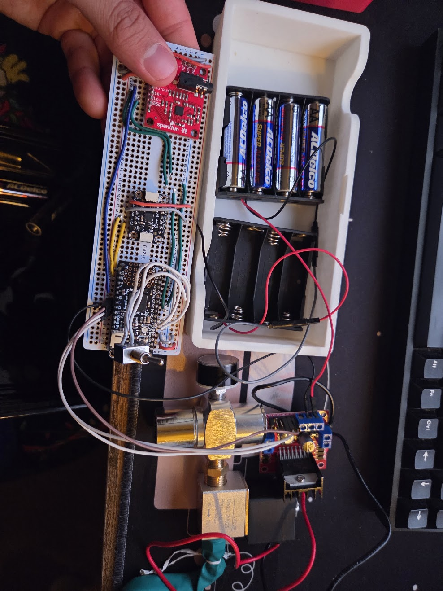
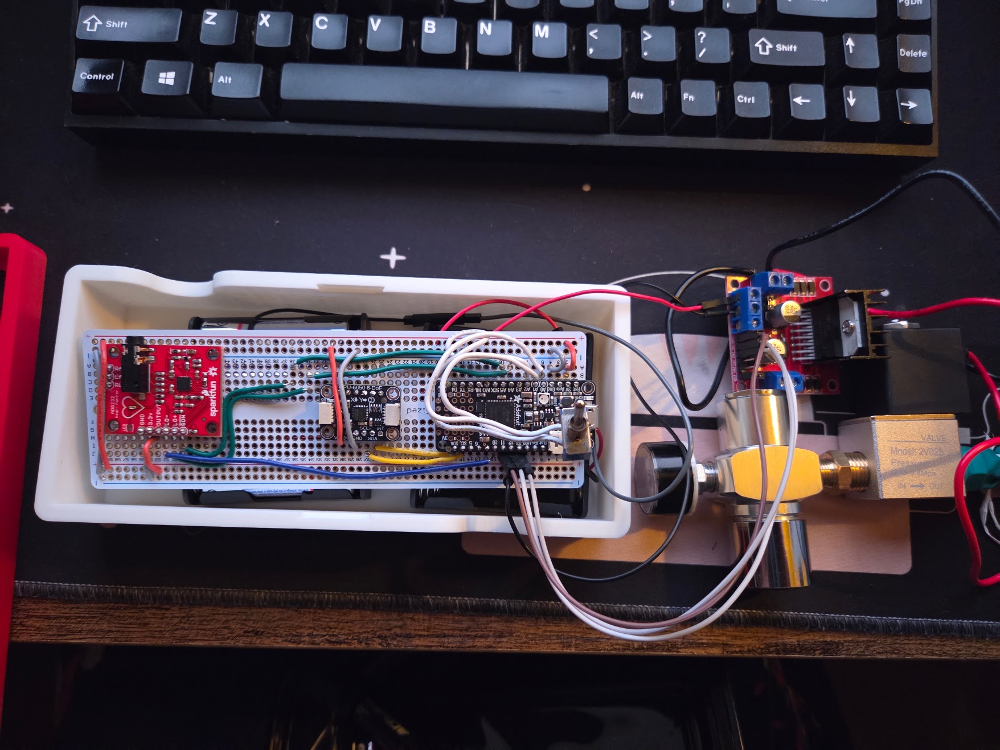
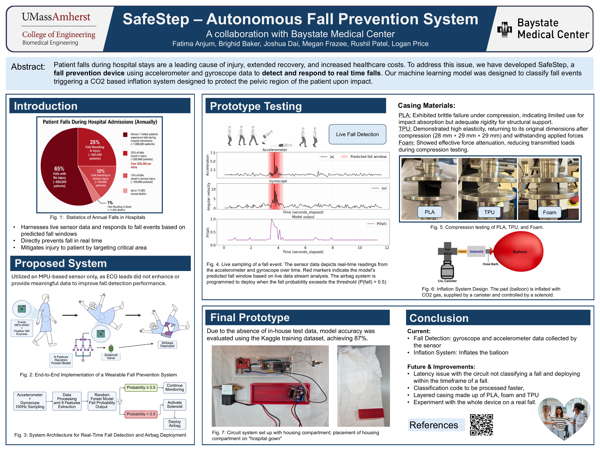

The challenge
SafeStep was developed in response to a Baystate Medical Center brief: intervene during a fall, not only after it happens. The system targets pelvic protection while remaining compact enough to operate as a wearable device.
From motion data to embedded inference
An MPU-6050 samples three-axis acceleration and angular velocity at 100 Hz. A half-second sliding window is converted into nine motion features and evaluated by a Random Forest model exported to an Adafruit Feather M4 Express. A physics-based free-fall check supplies a second detection path rather than relying on the classifier alone.
When a fall is detected, the controller drives an electromechanical solenoid through a separate power stage and releases CO₂ into an 8.1-liter protective cushion. Bench testing measured the cushion itself inflating in under 200 ms. End-to-end sensing, classification, and actuation latency remained a separate optimization target for the next prototype.


What the prototype established
The classifier reached 87% accuracy on the available evaluation dataset, and live sensor plots showed the model identifying fall windows. Material testing also guided a layered enclosure direction: rigid PLA for support, resilient TPU, and foam for impact attenuation.
The work turned a clinical concept into a complete sensing-to-actuation prototype while revealing the remaining engineering priorities: collect representative in-house data, reduce total response latency, and validate the full wearable during controlled fall testing.
